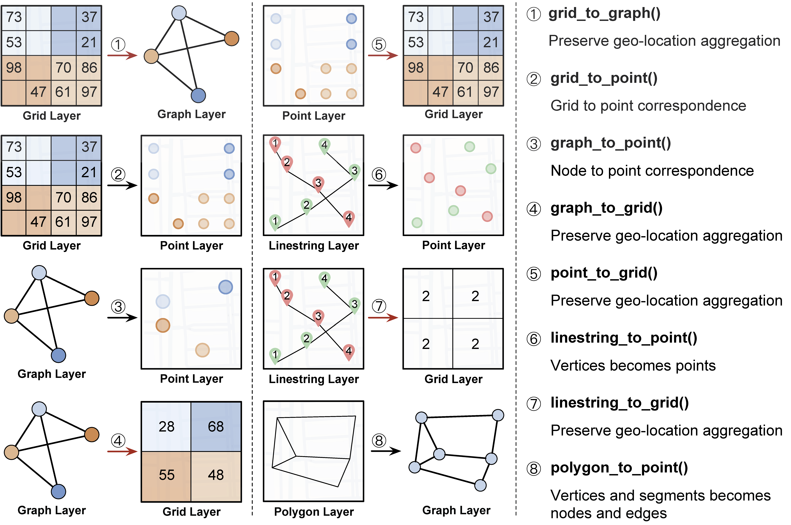

UDL Transformation
Overview
API
Raw to Layer |
Returns |
Description |
|---|---|---|
tif_to_grid() |
grid |
Convert a TIFF file to a grid |
csv_to_grid() |
grid |
Convert a TIFF file to a grid |
csv_to_graph() |
graph |
Convert a tabular data to a graph |
json_to_graph() |
graph |
Convert a JSON file to a graph |
csv_to_point() |
point |
Convert a tabular data to a point |
json_to_point() |
point |
Convert a tabular data to a point |
csv_to_linestring() |
linestring |
Convert a tabular data to a linestring |
json_to_polygon() |
polygon |
Convert a tabular data to a polygon |
Layer to Layer |
Returns |
Description |
|---|---|---|
point_to_grid() |
grid |
Transform the PointLayer data to GridLayer data by aggregating the points in the same grid cell |
linestring_to_grid() |
grid |
Transform the LinestringLayer data to GridLayer data by counting the vertices in the same grid cell |
polygon_to_grid() |
grid |
Transform the PolygonLayer data to GridLayer data by counting the vertices in the same grid cell |
point_to_graph() |
graph |
Transform the PointLayer data to GraphLayer data by converting the points to nodes |
polygon_to_graph() |
graph |
Transform the PolygonLayer data to GraphLayer data by converting the vertices to nodes and the segments to edges |
grid_to_point() |
point |
Transform the GridLayer data to PointLayer data by converting the grid cells to points |
Note
The PARAMETERS of the API are omitted due to the space limitation. More details can be found in the following sections.
Raw to Layer API

tif_to_grid(name, filedir, start_lat, end_lat, start_lon, end_lon, step_lat, step_lon, year=None, band=1, coord_type="latlon", mode="avg")
name (string) - Name of the layer
filedir (list[string]) - The list of the path to the TIFF file
start_lat (float) - Starting latitude
end_lat (float) - Ending latitude
start_lon (float) - Starting longitude
end_lon (float) - Ending longitude
step_lat (float) - Step of latitude
step_lon (float) - Step of longitude
year (int) - The year of dataset
band (int) - The band of the TIFF file. Defaults to 1.
coord_type (string) - Coordinate order type of tif file and the choice is “latlon” or “lonlat”. Defaults to “latlon”. The type can be revealed by
get_coord_type(in utils).mode (string) - The way of aggregation. “sum”, “avg”, “max”, “min” or “random”. Defaults to “avg”.
“avg”
“sum”
“max”
“min”
“random”
Grid UDL object
from transformation import *
nightlights_grid = tiff_to_grid("data/nightlights.tif", "nightlights", 30, 32.4, 0.01, 120, 122, 0.01, 2013, "max", "latlon", "avg")
csv_to_grid(name, filedir, start_lat, end_lat, start_lon, end_lon, step_lat, step_lon, year=None, mode="avg")
name (string) - Name of the layer
filedir (string) - Path to the tabular data file (CSV)
The file should contain the following columns:
“latitude”
“longitude”
name
start_lat (float) - Starting latitude
end_lat (float) - Ending latitude
start_lon (float) - Starting longitude
end_lon (float) - Ending longitude
step_lat (float) - Step of latitude
step_lon (float) - Step of longitude
year (int) - Year of the data
mode (string) - The way of aggregation. “sum”, “avg”, “max”, “min” or “random”. Defaults to “avg”.
“avg”
“sum”
“max”
“min”
“random”
Grid UDL object
taxi_pick_grid = tab_to_grid("pick and drop.csv", "Pick up of Shanghai taxi", 30, 32.4, 0.01, 120, 122, 0.01, 2018, "sum")
json_to_graph(name, filedir, year=None, directed=False, edge_attribute=None)
name - Name of the layer
filedir - Path to the json data file (JSON)
The json file should have the following format (“nightlights” is the name of the layer):
{ "nodes": [ { "id": 1, "latitude": 31.2, "longitude": 121.4, "nightlight": 0.2 }, { "id": 2, "latitude": 31.3, "longitude": 121.5, "nightlight": 0.3 } ], "edges": [ { "source": 1, "target": 2, "weight": 1.2 } ] }
year (int)- The year of dataset
directed (bool) - Whether the graph is directed. Defaults to False
edge_attribute (string) - The attribute of the edge. Defaults to None
Graph UDL object
roads_graph = tab_to_graph("data/roads.csv", "roads", 30, 32.4, 120, 122, 2013)
csv_to_graph(name, filedir, year=None, attr=None, directed=False)
name (string) - Name of the layer
file (string) - Path to the tabular data file (CSV)
The file should contain the following columns:
“id” (also is the “source” node of the edge)
“latitude”
“longitude”
name (the attribute value of the node)
“target” (optional)
“weight” (optional)
year (int) - Year of the data
attr (string) - The attribute name of the edge. Defaults to None
directed (bool) - Whether the graph is directed. Defaults to False
Graph UDL object
json_to_point(name, filedir, year=None)
name (string) - Name of the layer
filedir (string) - Path to the JSON data file (JSON)
The json file should have the following format (“nightlights” is the name in column_list, the key of the json file should be the same as the name in column_list):
{ "points": [ { "latitude": 1.0, "longitude": 1.0, "nightlight": 0.2 }, { "latitude": 2.0, "longitude": 2.0, "nightlight": 0.3 }, ] }
year (int) - Year of the data
Point UDL object
csv_to_linestring(name, filedir, sort_column, group_column=None, column_list=[], year=None)
name (string) - Name of the layer
filedir (string) - Path to the tabular data file (CSV)
The file should contain the following columns (the rest columns should be the element in column_list):
“latitude”
“longitude”
sort_column (string) - The column name of the data to be sorted as the sequence of the linestring
group_column (string) - The column name of the data to be grouped as the division of the linestring. If the column is None, the data will be a single linestring.
column_list (list[string]) - The list of the column names of the data to be added as the attributes of the linestring
year (int) - Year of the data
Linestring UDL object
json_to_polygon(name: str, filedir: str, year=None, column_list=[], output_dir=None, encoding="utf-8")
name (string) - Name of the layer
filedir (string) - Path to the data file (JSON)
The json file should have the following format (the rest keys should be the element in column_list):
{ "features": [ { "type": "Feature", "geometry": { "type": "Polygon", "coordinates": [ [ [ 120.992531, 30.955028 ], [ 120.991683, 30.958211 ] ] ] }, } ] }
year (int) - Year of the data
column_list (list[string]) - The list of the column names of the data to be added as the attributes of the polygon
Polygon UDL object
Layer to Layer API
{kind=link}
point_to_grid(point_data, target_name=None, start_lat, end_lat, step_lat, start_lon, end_lon, step_lon, mode="avg")
point_data (PointLayer) - The point data to be transformed
target_name (string) - The name of the grid transformed to
start_lat (float) - Starting latitude
end_lat (float) - Ending latitude
step_lat (float) - The step of latitude of the grid
start_lon (float) - Starting longitude
end_lon (float) - Ending longitude
step_lon (float) - The step of longitude of the grid
mode (string) - The way of aggregation. “sum”, “avg”, “max”, “min” or “random”. Defaults to “avg”.
“avg”
“sum”
“max”
“min”
“random”
Grid UDL object
linestring_to_grid(linestring_data, target_name=None, start_lat, end_lat, step_lat, start_lon, end_lon, step_lon)
linestring_data (LinestringLayer) - The linestring data to be transformed
target_name (string) - The name of the grid transformed to
start_lat (float) - Starting latitude
end_lat (float) - Ending latitude
step_lat (float) - The step of latitude of the grid
start_lon (float) - Starting longitude
end_lon (float) - Ending longitude
step_lon (float) - The step of longitude of the grid
Grid UDL object
polygon_to_grid(polygon_data, target_name=None, start_lat, end_lat, step_lat, start_lon, end_lon, step_lon)
polygon_data (PolygonLayer) - The polygon data to be transformed
target_name (string) - The name of the grid transformed to
start_lat (float) - Starting latitude
end_lat (float) - Ending latitude
step_lat (float) - Difference of latitude between each cell
start_lon (float) - Starting longitude
end_lon (float) - Ending longitude
step_lon (float) - Difference of lontitude between each cell
Grid UDL object
point_to_graph(point_data, target_name=None, directed=False, edge_attribute=None, edge_weight=None)
point_data (PointLayer) - The point data to be transformed
target_name (string) - The name of the grid transformed to
directed (bool) - Whether the graph is directed. Defaults to False
edge_attribute (string) - The attribute name of the edge. Defaults to None
edge_weight (list) - The attribute value of the edge weight. Defaults to None
Graph UDL object
polygon_to_graph(polygon_data, target_name=None, edge_attribute=None, edge_weight=None)
polygon_data (PolygonLayer) - The polygon data to be transformed
target_name (string) - The name of the grid transformed to
edge_attribute (string) - The attribute name of the edge (should be the attribute in polygon data’s features). Defaults to None
edge_weight (list) - The attribute value of the edge weight. If the edge_attribute is specified, the edge_weight defaults to the value of the edge_attribute. Otherwise, the edge_weight defaults to None
Graph UDL object
grid_to_point(grid_data, target_name=None, start_lat=None, end_lat=None, step_lat=None, start_lon=None, end_lon=None, step_lon=None)
grid_data (GridLayer) - The grid data to be transformed
target_name (string) - The name of the point transformed to
start_lat (float) - Starting latitude
end_lat (float) - Ending latitude
step_lat (float) - The step of latitude of the grid
start_lon (float) - Starting longitude
end_lon (float) - Ending longitude
step_lon (float) - The step of longitude of the grid
Point UDL object
grid_granularity_convert(grid_data, target_name=None, target_lat_step, target_lon_step, start_lat, end_lat, start_lon, end_lon)
grid_data (GridLayer) - The original grid data to be converted
target_name (string) - Name of the target grid data
target_lat_step - Step of latitude in the target grid data
target_lon_step - Step of longitude in the target grid data
start_lat - Starting latitude in the target grid data
end_lat - Ending longitude in the target grid data
start_lon - Starting longitude in the target grid data
end_lon - Ending longitude in the target grid data
grid_merge(grid_data1, grid_data2, target_name=None, aggregation)
Two merged grids should have the same granularity.
grid_data1 (GridLayer) - The first grid data to be merged
grid_data2 (GraphLayer) - The second grid data to be merged
target_name (string) - The name of the merged grid
aggregation (string/function) - Agregation method, including:
“sum”
“average”
“max”
“min”
other user-defined aggregation methods
Grid UDL object
graph_align(graph_data1, graph_data2, target_name=None, start_lat, end_lat, start_lon, end_lon)
graph_merge(graph_data1, graph_data2, target_name=None, start_lat, end_lat, start_lon, end_lon, aggregation)
graph_data1 (GraphLayer) - The first graph data to be merged
graph_data2 (GraphLayer) - The second graph data to be merged
target_name (string) - The name of the merged graph
start_lat - Starting latitude
end_lat - Ending latitude
start_lon - Starting longitude
end_lon - Ending longitude
aggregation (string/function) - Agregation method, including:
“sum”
“average”
“max”
“min”
other user-defined aggregation methods
Graph UDL object